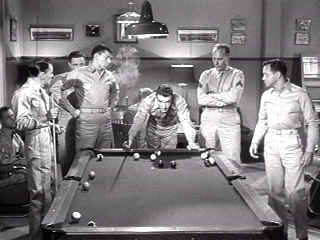

| From Here to Eternity (SE)/ A,B |
| Columbia/1953/118/FS 1.33 |
A
towering faithful screen adaptation of the powerful James Jones novel, From Here to Eternity
is a film deserving of its lofty reputation. The
Daniel Taradash script preserves the rich characterizations and Fred Zinnemann delivers with
elegant direction. The film won eight Oscars© and was nominated for five more. It won as Best
Picture and Best Director for Zinnemann. Frank Sinatra and Donna Reed won supporting Oscars© and
Montgomery Clift, Burt Lancaster and Deborah Kerr were nominated for Best Actor.
The multiple stories lines revolving around Schofield Barracks in
Honolulu, Hawaii in the days leading up to the attack on Pearl Harbor are balanced beautifully.
Newly transferred Private Robert E. Lee Prewitt is a boxer and a bugler. A self-declared
thirty-year-man, Prewitt must face the "treatment" because of his refusal to fight for
the company's stacked boxing team. Top Sergeant Milt Warden runs G company with a keen intelligence
for company commander Captain Dana Holmes. The captain's wife Karen wears tight sweaters and
advertises a sexuality that proves too tempting for Warden. Feisty New Jersey Private Maggio
befriends Prewitt and takes him to The New Congress Club where he meets Lorene, a working girl, and
promptly falls in love. As the pressure from the other boxers mounts on Prewitt, Warden can't help
but respect him. Maggio meanwhile lets the booze put him in the path of Stockade Sergeant Fatso
Judson.
 |
| To fight or not to fight. ©Columbia |
The drama is spiced by some excellent fights, local
color in the location shoot, and one of the screen's most famous love scenes. Director Fred
Zinnemann is a master of pace and taste. Every scene emits class. Zinnemann maintains a fine balance
between the stories, never running with one long enough to forget the others. The film flows with
the certainty of the ocean surf. Zinnemann, not known for action direction even gets the attack on Schofield Barracks
perfectly. The aerial
shots of the men scattering under from the attack of the planes is very impressive.
Montgomery Clift cast against type as Prewitt is a brilliant Zinnemann
choice. Clift brings a simple dignity to the role of
Robert E. Lee Prewitt, Jr. No, he doesn’t look very much like a boxer, but he handles himself
admirably in the fight scenes. He does know his way around a bugle, though, and his pensive nature
adds incredible dimension to his character. Burt Lancaster plays tough top sergeant Warden with
typically big acting strokes. There are moments when he’s a trifle stiff, but overall it’s one of Lancaster’s fine
films. Deborah Kerr is another terrific choice int he role of Karen Holmes. Kerr makes herself seem
a cut above everyone around her, maintaining a certain degree of ice even her most sexual moments.
Frank Sinatra playing Maggio won an Academy Award for Best Supporting actor. The many small roles
are handled with equal care. Ernest Borgnine stands out in the role of Fatso. With fine guidance
from Zinnemann these tough
exterior characters are able to show their internal emotions through the combination of articulate
script and outstanding direction.
Grain is preserved in tight patterns. The DVD really looks like film.
There is a steady speckling of dirt sprinkling the elements. A consistently sharp transfer and full range gray scale gives the film good dimension.
Good light output provides the picture with punch. Shadow detail is excellent and interior lighting
appears natural. The horns sound very good on the mono soundtrack, but violins are somewhat strident. Dialogue is
delivered cleanly and there's no hiss.
A lot of good anecdotes are recalled by Tim Zinnemann and Alvin Sargent on
an audio commentary. Zinnemann is the director's son and Sargent had a small role in the film and
also later scripted Julia for Fred Zinnemann. Zinnemann debunks the Sinatra/Godfather
stories that claim the actor got his role through some gang intersession maintaining that studio
head Harry Cohen gave him the role at the suggestion of Sinatra's then wife Ava Gardner. No horse's
heads here. Commentary is not scene specific, however, it is often sparked by the action. There's
a short featurette that's pure promo film and a few segments from Fred Zinnemann: As I See It, including
some home movies.

The Feature Archive
has articles ranging from Akira
Kurosawa to Blonde Bimbos.
Movie Rage: Death in the Aisles
Everyone knows what it feels like to get angry at the
movies these days. Here's a humorous but not so delightful view of big screen misery.


Elegant DVD portal with news, reviews, links and information
galore.

European film portal and hard to find video store.

The AV
Science Forum provides great feedback on the latest home theater equipment with a wide range of
opinions. Outstanding home theater resource.
 Have you visited Home Theater
Talk lately? One of the friendliest places on the Net for Home Theater and DVD discussion, you
can get help for installation problems or simply share your opinions with other Vidiots.
Have you visited Home Theater
Talk lately? One of the friendliest places on the Net for Home Theater and DVD discussion, you
can get help for installation problems or simply share your opinions with other Vidiots.

L.A. Confidential (SE) /A,A

Unquestionably the best picture of 1997. Top-notch entertainment with superb
acting.

The major studio vaults are filled with incredible film treasures which
few have seen the light of DVD.
Open the Vaults


The Movie Poster Archive include extensive poster images from the films of stars like Susan Hayward, Kirk Douglas, Katharine Hepburn and many more. Our featured star is Burt Lancaster.